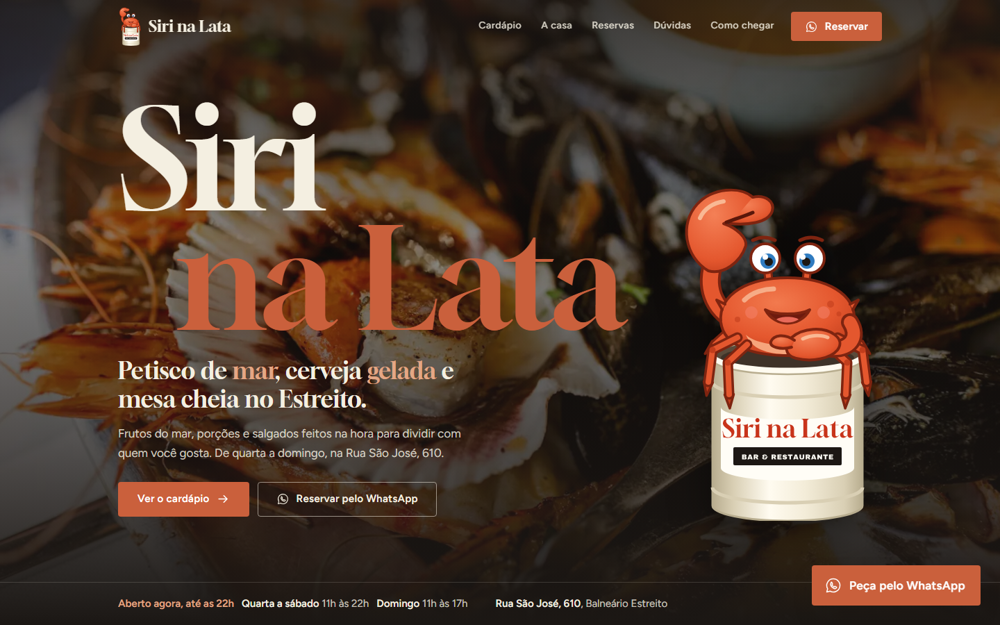
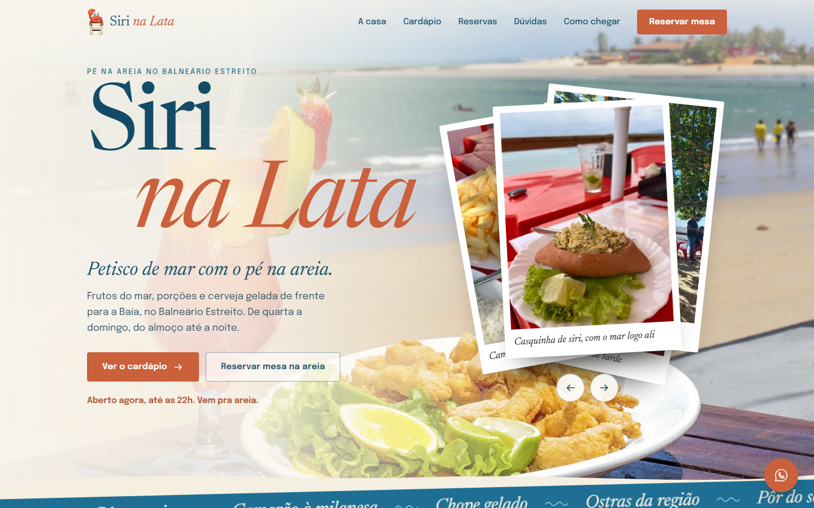
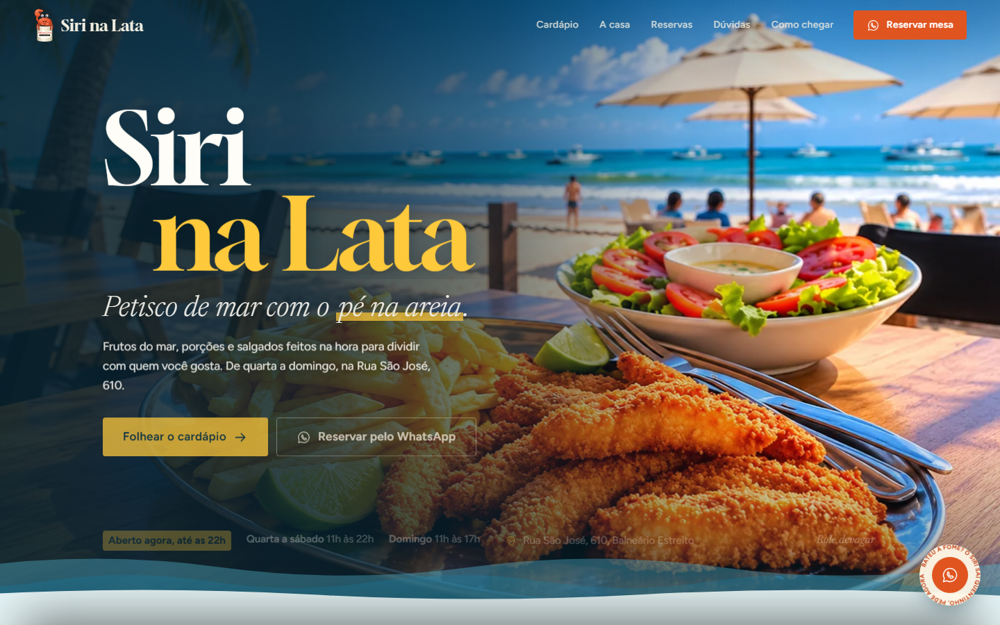

Modelo Bronze
Enxuto, bonito e de baixo custo
Capa escura com o mascote, grade de pratos com fotos reais, mosaico da casa, faixa de reserva e WhatsApp sempre à mão. Leve e rápido de carregar.
Abrir o modelo
Modelo Silver
Cartão-postal de beira-mar
Capa com foto da praia e pilha de postais que passa sozinha, cardápio em livro que folheia, pedido montado no site e reserva guiada pelo WhatsApp. Paleta com azuis de mar.
Abrir o modelo
Modelo Gold
Maré: uma experiência completa
Capa em tela cheia, seções que se empilham ao rolar e cardápio em livro que vira as páginas com a rolagem. O modelo mais marcante, para quem quer impressionar.
Abrir o modelo